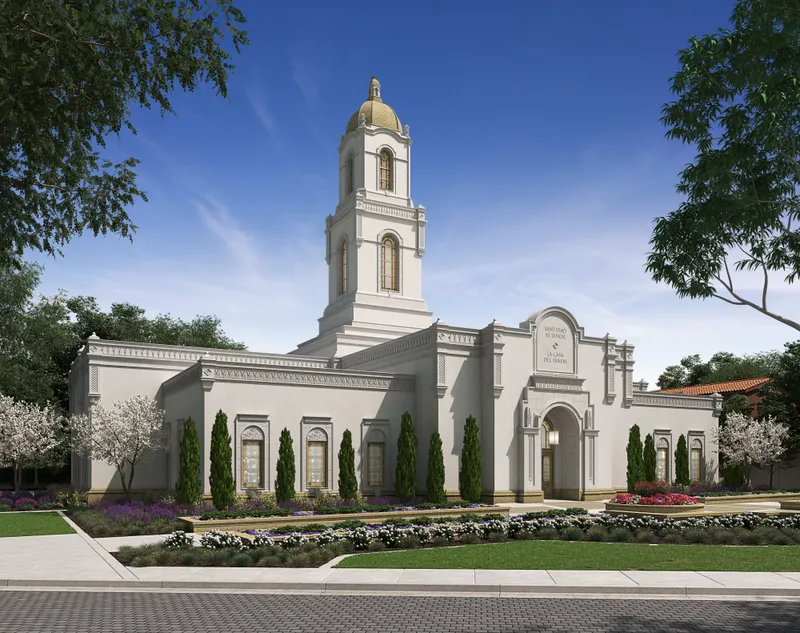
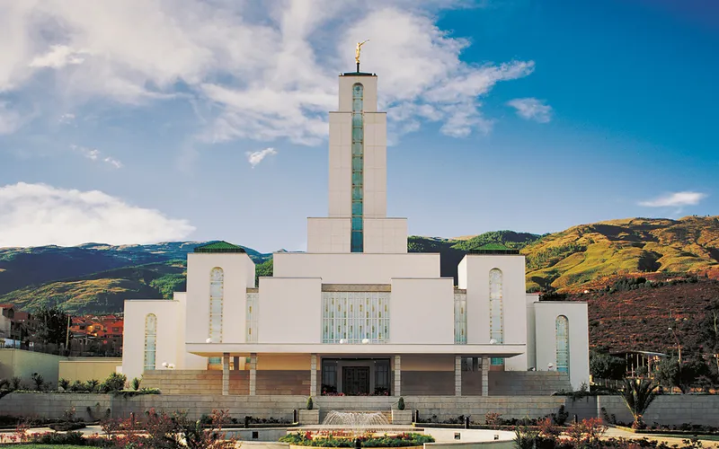

Temple Album
☰
Home
Old
New
Large
Small
Temple Gallery
Salt Lake Temple

Rome Italy Temple
Washington D.C. Temple
Mexico City Temple
Provo City Center Temple
Laie Hawaii Temple
Tokyo Japan Temple
Bogotá Colombia Temple

Cochabamba Bolivia Temple